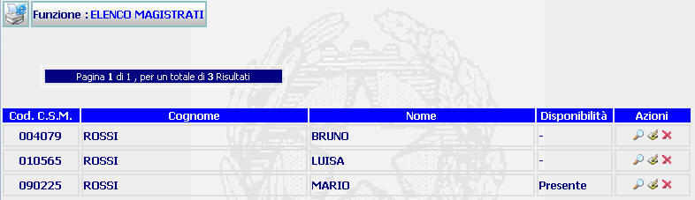

GENERALITA'
LISTA MAGISTRATI: La funzione, consente di visualizzare la lista dei magistrati presenti ed associati all'ufficio corrente e che soddisfano la ricerca effettuata con la funzione Ricerca del Magistrato .
LE MASCHERE VIDEO
La funzione in esame viene realizzata attraverso l'utilizzo della seguente maschera che riporta gli elementi descrittivi e operativi dei magistrati:

ATTENZIONE: se c'è un solo elemento da visualizzare anziché questa maschera viene visualizzata la maschera del DETTAGLIO.
COME FARE PER ...
| Per visualizzare i dati di dettaglio di un magistrato, l'utente deve: |
Cliccare sul pulsante
; si aprirà la maschera di Dettaglio magistrato che permette di visualizzare i dati di dettaglio di un magistrato.
| Per modificare i dati inseriti relativi al magistrato, l'utente deve: |
Cliccare sul pulsante
 ;
si aprirà la maschera
modifica magistrato che permette di
effettuare le modifiche volute.
;
si aprirà la maschera
modifica magistrato che permette di
effettuare le modifiche volute.
| Per cancellare il magistrato e tutti i dati relativi l'utente deve: |
Cliccare sul pulsante
 ;
verrà visualizzato il seguente messaggio:
;
verrà visualizzato il seguente messaggio:

a) Cliccando sul pulsante
 si annullerà
l'operazione di cancellazione e si ritornerà alla maschera corrente.
si annullerà
l'operazione di cancellazione e si ritornerà alla maschera corrente.
b) Cliccando sul pulsante
 il sistema visualizzerà la maschera "Ricerca
del Magistrato"
il sistema visualizzerà la maschera "Ricerca
del Magistrato"
| Per visualizzare,se presente, un'altra pagina occorre:
|

CAMPI
Nella maschera non sono presenti campi digitabili.
PULSANTI
Oltre ai
pulsanti orizzontali della maschera principale
ed ai pulsanti di uso
comune
 ,
e
è presente il seguente pulsante:
,
e
è presente il seguente pulsante:
|
PULSANTE |
DESCRIZIONE |
|
|
Questo pulsante ha lo scopo di visualizzare i dati di Dettaglio magistrato. . |